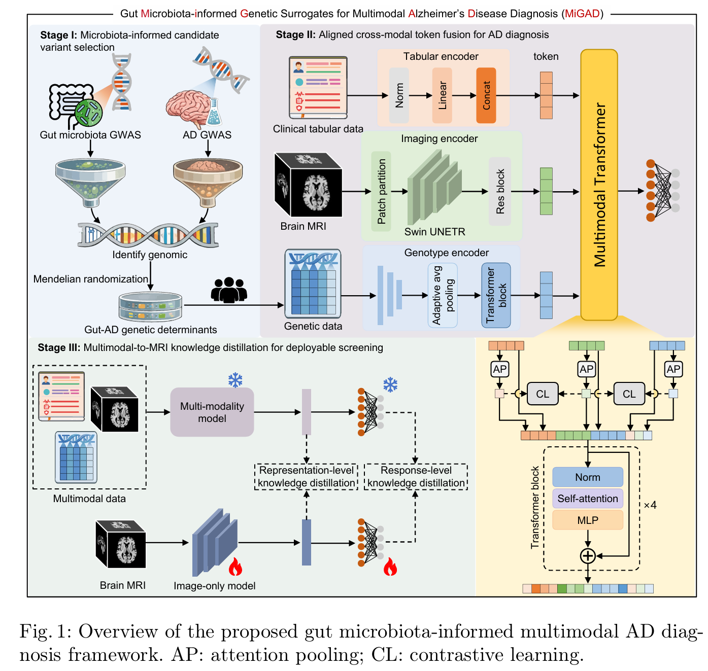

The Intelligent Medical Computing Laboratory (IMCL, also known as GEMLab) has highlighted MiGAD, a multimodal framework that uses gut microbiota-informed genetic surrogates, brain MRI, and clinical phenotypes for Alzheimer’s disease (AD) diagnosis. The work has been selected for MICCAI 2026.
Pathological changes associated with AD can begin years before clinical symptoms appear. Reliable early diagnosis therefore cannot always depend on a single modality. The gut-brain axis is increasingly linked to AD, yet direct microbiome measurements are affected by diet, medication, lifestyle, and environment, creating substantial individual and temporal variation.
Stable genetic surrogates for gut-brain evidence
MiGAD stands for Gut Microbiota-informed Genetic Surrogates for Multimodal Alzheimer’s Disease Diagnosis. Rather than feeding a time-varying microbiome profile directly into the model, the framework uses relatively stable host genetic variation as a surrogate carrier of gut-microbiota-related information.
The study integrates summary statistics from multiple gut microbiome GWAS and AD-related GWAS. Mendelian randomization and colocalization analyses identify genetic signals associated with both the gut microbiota and AD, producing an individual-level candidate set of 12,634 variants. This design aims to reduce the temporal fluctuation and heterogeneity associated with direct microbiome testing.
Aligning MRI, clinical, and genetic information
MiGAD tokenizes and encodes T1-weighted brain MRI, structured clinical variables, and genetic data separately. Attention pooling produces global representations for each modality, while image-anchored contrastive learning maps the modalities into a shared representation space and reduces semantic mismatch during fusion.
A multimodal Transformer then models global interactions among imaging, clinical, and genetic tokens for three-way classification of normal cognition (NC), mild cognitive impairment (MCI), and AD. Ablation experiments show that the gut-microbiota-related variants, genetic token encoding, cross-modal alignment, and Transformer fusion all contribute to the final performance.

Knowledge distillation for MRI-only deployment
Complete genetic information and clinical scales are not always available in primary-care or large-scale screening. MiGAD therefore uses the trained multimodal model as a teacher and builds a student model that receives only brain MRI.
Distillation jointly uses ground-truth labels, the teacher’s output distribution, and representation-level consistency between teacher and student. Multimodal information improves the student during training, while actual inference requires only MRI. The resulting model retains part of the diagnostic knowledge carried by the clinical and gut-brain genetic evidence under more realistic deployment conditions.
Validation on UK Biobank and ADNI
The study evaluates MiGAD on two public cohorts, the UK Biobank (UKB) and the Alzheimer’s Disease Neuroimaging Initiative (ADNI), including 6,500 participants in total: 4,141 from UKB and 2,359 from ADNI.
The multimodal MiGAD model achieves an accuracy of 0.878 and an AUC of 0.963, outperforming representative multimodal methods under the same data split. The MRI-only baseline has an AUC of 0.825, while the distilled MRI-only student reaches 0.910 under guidance from the multimodal teacher.
MiGAD also reduces clinically meaningful confusion between MCI and AD. Compared with HyperFusion, DAFT, and MADDi, it achieves the highest AUC of 0.963, supporting the complementary value of cross-modal alignment and gut-brain genetic surrogates.
Toward deployable early screening
MiGAD addresses three practical challenges in early AD diagnosis: the limited information available from brain imaging alone, the instability of direct microbiome measurements, and the frequent unavailability of complete peripheral modalities during screening. It provides a pipeline from genetic surrogate construction and multimodal alignment to MRI-only knowledge distillation.
In the intended workflow, rich multimodal information is used primarily during training, while inference relies only on brain MRI. This offers a route to combine biological complementarity with practical deployability. Further validation in independent populations and real clinical screening settings will be needed to assess cross-cohort stability and clinical utility.
Paper: MiGAD: Gut Microbiota-informed Genetic Surrogates for Multimodal Alzheimer’s Disease Diagnosis
Authors: Zhichao Liang, Shilun Zhao, Fan Li, Zifeng Lian, Weilin Zhou, Wei Yan, Chi Kin Lam, Tao Tan, and Dinggang Shen.